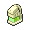

召唤塔之宝可梦：圆朱舞蹈剧场、铃音小径、铃铛塔、漩涡群岛
主线
若叶镇
若叶镇Bulbapedia 原图
空木研究所
回到若叶镇的空木研究所，琴音/响很佩服你已经集齐了 8 枚徽章，空木博士也感谢你帮忙做研究。为了表达谢意，他送你一个大师球，一种能百分之百捕捉任何宝可梦的稀有精灵球！博士说这种球一般只发给有认可的宝可梦研究者，但他觉得你会比他用得更好。最好留着对付传说的宝可梦，因为它们平时很难抓。他还告诉你，一群舞女正在找你，她们在圆朱舞蹈剧场等你。
圆朱市
西尔弗的考验
你走近舞蹈剧场时，劲敌（西尔弗）刚好走出来，还在为输给舞女们而懊恼。他警告你别因为打败了火箭队就自满，舞女们都是很强的训练家。他匆匆离开，不想看到你在他失败的地方获胜。
舞蹈剧场
进去后走上舞台，Zuki 会欢迎你。她解释说，为了请凤王（心金）/洛奇亚（魂银）回来，她们需要找到一个和宝可梦有着正确羁绊的人。她透露，当初把神奇蛋交给宝可梦爷爷、请他转交给展现出「真正潜力」的人的，正是她们。不过，光有纯粹的心意还不足以面对传说宝可梦的力量。于是 Zuki 给你一个证明自己的机会：连续打败她们五姐妹。
对战 Zuki
Zuki 就是你在桔梗市见过的女孩，她想考验你和宝可梦的羁绊有多深。
| 宝可梦 | 详情 |
|---|---|
Lv.38 · 恶 | 特性：同步 招式：恶之波动、暗影球、奇异之光、珍藏 |
对战 Naoko
Naoko 是你在桐树林第一次见到的女孩，她目睹了钢铁有难时你对付火箭队的样子。
| 宝可梦 | 详情 |
|---|---|
Lv.38 · 超能力 | 特性：同步 招式：精神强念、高速星星、自我暗示、珍藏 |
对战 Miki
Miki 看到你赶走了在舞蹈剧场为难她的火箭队手下。
| 宝可梦 | 详情 |
|---|---|
Lv.38 · 火 | 特性：引火 招式：大字爆炎、电光一闪、鬼火、珍藏 |
对战 Sayo
Sayo 就是穿着草鞋滑冰的女孩，你帮她离开冰雪小径时她看到了你的善良。她当时也在龙穴，听到了你回答长老问答的内容。
| 宝可梦 | 详情 |
|---|---|
Lv.38 · 电 | 特性：蓄电 招式：十万伏特、影子分身、电磁波、珍藏 |
对战 Kuni
Kuni 是你在满金地下通道遇到的女孩，看到你挫败了火箭队占领广播塔的计划，她很惊讶。
| 宝可梦 | 详情 |
|---|---|
Lv.38 · 水 | 特性：储水 招式：冲浪、电光一闪、极光束、珍藏 |
打败五姐妹证明了你的实力，Zuki 把透明铃铛（心金）/海声铃铛（魂银）托付给你。这件传说中的宝物和彩虹之羽/银色之羽搭配，就能召唤传说的宝可梦回到它的栖息地。
就在这时，姐妹们的小妹妹跑了进来。她大喊说刚才看到一只大宝可梦的影子，在铃铛塔上空（心金）/在漩涡群岛的水里（魂银）。姐妹们都赶去查看，你也跟上去吧。
铃铛塔
铃音小径
铃音小径Bulbapedia 原图
铃音小径是结界关口和铃铛塔之间的一条短路。据说不管什么季节，这里总是沐浴在夕阳中。
| 道具 | 版本 | 位置 / 获得方法 |
|---|---|---|
| 心金 / 魂银 | 小路北边，从西数第二和第三棵树之间（隐藏道具） 小路北边，从西数第三和第四棵树之间（隐藏道具） 铃铛塔西北角旁边（隐藏道具） | |
| 心金 / 魂银 | 中北部区域，从西数第五和第六棵树之间（隐藏道具） 铃铛塔南边（隐藏道具） |
铃铛塔 1FBulbapedia 原图
铃铛塔 2FBulbapedia 原图
铃铛塔 3FBulbapedia 原图
铃铛塔 4FBulbapedia 原图
铃铛塔 5FBulbapedia 原图
铃铛塔 6FBulbapedia 原图
铃铛塔 7FBulbapedia 原图
铃铛塔 8FBulbapedia 原图
铃铛塔 9FBulbapedia 原图
铃铛塔 10FBulbapedia 原图
铃铛塔（屋顶）Bulbapedia 原图
召唤凤王Bulbapedia 原图
凤王降临铃铛塔Bulbapedia 原图
铃铛塔
铃铛塔是一处圣地，只有少数人能进去。有圆朱道馆的迷雾徽章就能进塔，但只能到一楼。持有彩虹之羽和透明铃铛能证明你作为训练家的实力，两者合在一起就能到达塔的其他地方。
- 这一节现在只有心金玩家能完成。魂银玩家要以后才能拿到彩虹之羽，所以先跳到下一节，之后再回来。魂银版不需要透明铃铛，也拿不到。
| 宝可梦 | 版本 | 方式 | 等级 | 出现率 |
|---|---|---|---|---|
| 2F-10F | ||||
| 心金 / 魂银 | 2F-10F | Lv.20-24 | 早 100% · 日 100% · 夜 0% | |
| 心金 / 魂银 | 2F-10F | Lv.22-24 | 早 0% · 日 0% · 夜 20% | |
| 心金 / 魂银 | 2F-10F | Lv.20-22 | 早 0% · 日 0% · 夜 80% | |
| 道具 | 版本 | 位置 / 获得方法 |
|---|---|---|
| 3F | ||
| 心金 / 魂银 | 西南角 | |
| 心金 / 魂银 | 中北部区域，往东的斜坡上（隐藏道具） | |
| 4F | ||
| 心金 / 魂银 | 柱子东边，左边那条路 | |
| 心金 / 魂银 | 东南梯子旁边 | |
| 心金 / 魂银 | 西南梯子附近 | |
| 5F | ||
| 心金 / 魂银 | 柱子旁边 | |
 全复药 | 心金 / 魂银 | 东偏南区域，去 4F 的楼梯北边（隐藏道具） |
| 6F | ||
| 心金 / 魂银 | 柱子旁边 | |
| 心金 / 魂银 | 西北区域 | |
| 7F | ||
| 心金 / 魂银 | 东北角 | |
| 8F | ||
| 心金 / 魂银 | 中央，柱子旁边，从 9F 的传送板过去 | |
| 心金 / 魂银 | 南侧，柱子东南边，从 9F 的传送板过去 | |
| 心金 / 魂银 | 北侧，最东边窗户下的光斑里（隐藏道具） | |
| 全复药 | 心金 / 魂银 | 北侧，西北角 |
| 9F | ||
| 心金 / 魂银 | 北侧，中间两座石像之间，从 8F 的传送板过去 | |
1F
走近西北边的梯子，彩虹之羽会在你头顶浮起片刻。看到这件传说中的宝物，守在那里的和尚就会让你继续上塔。
3F
从三楼开始，塔里有一连串斜坡，用来迷惑想利用传说宝可梦做坏事的入侵者。拿西南角的万灵药，然后在这一层走一个大大的 S 形，到东北边的楼梯。
4F
往南跳过第一个斜坡，然后走西边的路拿高级球。继续往南拿东南角的ＰＰ提升剂。往西拿离洞绳，然后爬上西北边的楼梯。
5F
沿北墙跳过两个斜坡到东北角，然后往南再往西，在中央柱子旁找到神奇糖果。走东南边的路，到东南角的楼梯。
4F
往西走到西南区域，再次经过柱子，爬上西北边的梯子。
5F
往东跳过前两个斜坡，再跳往南的那个。往西越过下一个斜坡，然后往南走东边的路，到中南部的梯子。
6F
六楼是下面密集的斜坡和上面分散的传送板之间的过渡层。拿柱子旁的全满药，然后沿路逆时针走，在西北角找到万灵药。往南越过两个斜坡，到西边的楼梯。
7F
踩北边的传送板到中央区域，再踩下一个到 9F 东侧。南边有两个传送板。先踩右边那个，它通往 8F 中央的死胡同，那里有ＰＰ多项全补剂；左边那个通往 8F 东南的死胡同，那里有金珠。回到 7F 北边的传送板，拿东北角的活力块。往南踩南边的传送板，到 8F 西侧。
8F
踩南边的传送板到 9F 北侧。拿北墙附近的ＨＰ增强剂，然后踩西边的传送板到 8F 北侧。到了之后拿西北角的全复药，再踩中北部的传送板，被传送到 9F 中央。
9F（中央）
爬梯子上 10F。
10F
过桥，爬上最后一道梯子就到屋顶了。
屋顶
| 虹色之羽：凤王降临铃铛塔 |
|---|
| Zuki 和其他舞女在这里等你。她解释说，她们长年练习的舞蹈和透明铃铛的铃声，是再次从天空的巨大彩虹中召唤凤王的仪式的一部分。透明铃铛随即在你头顶浮起，女孩们在塔尖周围站好位置。透明铃铛和塔上的四个铃铛开始鸣响，女孩们随着一阵夕阳色的落叶翩翩起舞。铃声传到天空，片刻之后凤王降落在屋顶上。Zuki 说是你的心和透明铃铛的共鸣让它出现了，它一定一直在等待像你这样的人。 |
对战凤王
彩虹色的凤王回到了它的栖息地！先用水和电属性攻击快速削减它的体力，再用格斗、火、钢、草、虫属性招式进一步削弱它。可以考虑用睡眠、麻痹之类的异常状态限制它的行动，也记得带些回复道具。
| 宝可梦 | 详情 |
|---|---|
Lv.45 · 火 / 飞行 | 特性：压迫感 携带： 招式：神通力、大晴天、大字爆炎、神圣之火 |
| 宝可梦 | 详情 |
|---|---|
Lv.70 · 火 / 飞行 | 特性：压迫感 携带： 招式：神圣之火、惩罚、原始之力、神秘守护 |
41号道路
漩涡群岛 1F（西北）Bulbapedia 原图
漩涡群岛 1F（东北）Bulbapedia 原图
漩涡群岛 1F（东南）Bulbapedia 原图
漩涡群岛 1F（西南）Bulbapedia 原图
漩涡群岛 B1FBulbapedia 原图
漩涡群岛 B2FBulbapedia 原图
漩涡群岛 B3F（上层）Bulbapedia 原图
漩涡群岛 B3F（下层）Bulbapedia 原图
召唤洛奇亚Bulbapedia 原图
洛奇亚从瀑布水潭现身Bulbapedia 原图
漩涡群岛
漩涡群岛在水下由一大片黑暗的洞窟相连，有些地方的海水和大石头会限制行动。虽然第一次来41号道路时就能看到这些岛，但没有冲浪、怪力和潮旋这几个野外招式无法完全探索，没有闪光也很难走。四座岛都能进入，但要找那只巨大的银色宝可梦，应该从东北边的岛进去。持有银色之羽和海声铃铛能证明你作为训练家的实力，两者合在一起就能进入海平面下深处一个隐秘的洞室。
- 这一节现在只有魂银玩家能完成。心金玩家要以后才能拿到银色之羽，所以先跳到下一节，之后再回来。心金版不需要海声铃铛，也拿不到。
| 宝可梦 | 版本 | 方式 | 等级 | 出现率 |
|---|---|---|---|---|
| 心金 / 魂银 | 洞窟 | Lv.23 | 30% | |
| 心金 / 魂银 | 洞窟 | Lv.23 | 5% | |
| 心金 / 魂银 | 洞窟 | Lv.22, 24 | 15% | |
| 心金 / 魂银 | 洞窟 | Lv.22, 24 | 50% | |
| 冲浪 | ||||
| 心金 / 魂银 | 冲浪 | Lv.15-25 | 60% | |
| 心金 / 魂银 | 冲浪 | Lv.10-20 | 30% | |
| 心金 / 魂银 | 冲浪 | Lv.15-25 | 10% | |
| 钓鱼 | ||||
| 心金 / 魂银 | 破旧钓竿 | Lv.10 | 85% | |
| 心金 / 魂银 | 破旧钓竿 | Lv.10 | 15% | |
| 心金 / 魂银 | 好钓竿 | Lv.20 | 50% | |
| 心金 / 魂银 | 好钓竿 | Lv.20 | 40% | |
| 心金 / 魂银 | 好钓竿 | Lv.20 | 10% | |
| 心金 / 魂银 | 洞窟 | Lv.23 | 30% | |
| 心金 / 魂银 | 洞窟 | Lv.23 | 5% | |
| 心金 / 魂银 | 洞窟 | Lv.22, 24 | 15% | |
| 心金 / 魂银 | 洞窟 | Lv.22, 24 | 50% | |
| 冲浪 | ||||
| 心金 / 魂银 | 冲浪 | Lv.15-25 | 60% | |
| 心金 / 魂银 | 冲浪 | Lv.15-25 | 30% | |
| 心金 / 魂银 | 冲浪 | Lv.10-30 | 10% | |
| 钓鱼 | ||||
| 心金 / 魂银 | 破旧钓竿 | Lv.10 | 85% | |
| 心金 / 魂银 | 破旧钓竿 | Lv.10 | 15% | |
| 心金 / 魂银 | 好钓竿 | Lv.20 | 50% | |
| 心金 / 魂银 | 好钓竿 | Lv.20 | 40% | |
| 心金 / 魂银 | 好钓竿 | Lv.20 | 10% | |
| 心金 / 魂银 | 洞窟 | Lv.24 | 30% | |
| 心金 / 魂银 | 洞窟 | Lv.24 | 5% | |
| 心金 / 魂银 | 洞窟 | Lv.23, 25 | 15% | |
| 心金 / 魂银 | 洞窟 | Lv.23, 25 | 50% | |
| 道具 | 版本 | 位置 / 获得方法 |
|---|---|---|
| 1F（东北） | ||
| 心金 / 魂银 | 岩脊上，南边梯子附近 | |
| 1F（西南） | ||
| 心金 / 魂银 | 东边梯子附近 | |
| 1F（东南） | ||
| 心金 / 魂银 | 西北角的岩石上（隐藏道具） | |
| B1F | ||
| 心金 / 魂银 | 中西部区域，西北和西南两道岩脊之间 | |
| 心金 / 魂银 | 西北区域，西北梯子往东几步的一根孤零零的石笋上（隐藏道具） | |
| 全复药 | 心金 / 魂银 | 西北的台阶上 |
| 心金 / 魂银 | 中北部区域，被 C 形岩脊围着 | |
| 心金 / 魂银 | 中南部区域，大石头西边 | |
| 心金 / 魂银 | 中东部区域，一条短死胡同里（隐藏道具） | |
| 心金 / 魂银 | 东南角的岩脊上，梯子东北边 | |
| 心金 / 魂银 | 东南岩脊西北侧，两块小岩石之间的洞壁上（隐藏道具） | |
| 心金 / 魂银 | 东北区域，东北梯子西边一块孤零零的岩石上（隐藏道具） | |
| 心金 / 魂银 | 东北，三块岩石中间那块上（隐藏道具） | |
| B2F | ||
| 心金 / 魂银 | 悬崖顶，南边梯子西边，从 B1F 过去 | |
| 全复药 | 心金 / 魂银 | 悬崖顶，南边梯子东边，从 B1F 过去 北边梯子西北边，两块岩石之间的洞壁上（隐藏道具） |
| 心金 / 魂银 | 西北区域 | |
| B3F（上层） | ||
| 心金 / 魂银 | 瀑布水潭上方突出的岩石上 | |
从西北岛进入
1F（西北）
用闪光照亮四周，然后爬下梯子。
B1F
从梯子往南拿速度增强剂，然后爬下东南边岩脊上的梯子。
B2F（悬崖顶）
拿悬崖顶上的两样道具：西边的ＰＰ多项全补剂和东边的全复药，然后回到 B1F。
B1F
往西北回到第一个梯子，然后从岩脊往南，拿台阶上的另一个全复药。往东走过中北部的台阶，走下第二道楼梯往左拿金珠。往东跳过两道台阶，爬上梯子。
1F（东北）
拿岩脊上的高级球，然后爬回同一个梯子下面。
B1F
从这里往西南走，途中跳过两道台阶。拿中南部的离洞绳。附近的大石头从这边推不动，所以改爬西南边的梯子。从西南岛进来的入口在南边。
从西南岛进入
1F（西南）
从入口用冲浪往东。拿高级球，爬下梯子。
B1F
往东北走，再往南到东南区域的岩脊。拿这里的特攻增强剂，爬上梯子。
1F（东南）
从东南岛进来的入口在南边。
从东北岛进入
1F（东北）
跳过第一道台阶，继续往东，跳下接下来两道台阶中最北边那道。爬下东北角的梯子。
B1F
沿岩脊往西南走，爬下下一个梯子。
B2F
拿西边的活力块。和悬崖边的男人说话，银色之羽会在你头顶浮起片刻。看到这件传说中的宝物，男人就会让开，让你继续沿悬崖往下走。走下斜坡，进入第一个洞口。
B3F（上层）
B3F 有一个巨大的瀑布水潭。拿上层突出岩石上的神奇糖果，然后回到 B2F。
B2F
继续沿悬崖往下走，进入下面的洞口，到达瀑布水潭。
B3F（下层）
| 银色之羽：洛奇亚从瀑布水潭现身 |
|---|
| Zuki 和其他舞女在这里等你。她解释说，她们长年练习的舞蹈和海声铃铛的铃声，是再次从瀑布水潭召唤洛奇亚的仪式的一部分。海声铃铛随即在你头顶浮起，女孩们在岩石平台周围站好位置。海声铃铛和瀑布两侧的两个铃铛开始鸣响，女孩们随着一阵银色的羽毛翩翩起舞。水幕上出现了一个有翅膀的影子，片刻之后洛奇亚现身了。Zuki 说是你的心和海声铃铛的共鸣让它出现了，它一定一直在等待像你这样的人。 |
走下平台北侧的楼梯，用冲浪游到传说的宝可梦那里。
对战洛奇亚
银色的洛奇亚现身了！先用岩石、电、冰、幽灵、恶属性攻击快速削减它的体力，再用草、超能力、格斗属性招式进一步削弱它。可以考虑用睡眠、麻痹之类的异常状态限制它的行动，也记得带些回复道具。
| 宝可梦 | 详情 |
|---|---|
Lv.70 · 超能力 / 飞行 | 特性：压迫感 招式：气旋攻击、惩罚、原始之力、神秘守护 |
| 宝可梦 | 详情 |
|---|---|
Lv.45 · 超能力 / 飞行 | 特性：压迫感 招式：神通力、求雨、水炮、气旋攻击 |
洞窟里没有出去的捷径，所以用离洞绳是最快的出去方法。
从东南岛进入
从东南岛进入最终会通到西南岛的入口。从这个方向能拿到的道具只有特攻增强剂和高级球，到这时你应该已经拿过了。
原文：Bulbapedia《Walkthrough:Pokémon HeartGold and SoulSilver/Part 14》（修订版本 4569683，），作者见原文页面历史。本页由 Eli 的杂货间翻译为中文，并有改动（重新排版、精简部分图注）。原文与译文均以 CC BY-NC-SA 2.5 授权。配图来自原站，版权归原作者与游戏厂商。